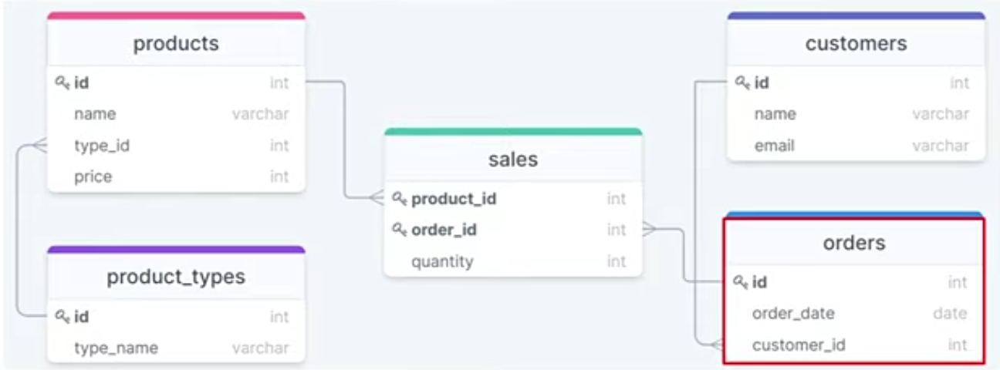

SQL — применяется для создания, модификации и управления данными в реляционной базе данных,
управляемой соответствующей системой управления базами данных.
В базовом варианте SQL является информационно-логическим языком, а не языком программирования.
Система управления базами данных (СУБД) — совокупность программных и лингвистических средств
общего или специального назначения, обеспечивающих управление созданием и использованием баз данных.
База данных (БД) - под базой данных (БД) понимают хранилище структурированных данных,
при этом данные должны быть непротиворечивы, минимально избыточны и целостны.
Реляционная база данных — база данных, основанная на реляционной модели данных.
Реляционные БД представляют связанную между собой совокупность таблиц-сущностей базы данных.
Каждая таблица БД представляется как совокупность строк и столбцов, где строки соответствуют
экземпляру объекта, конкретному событию или явлению, а столбцы - атрибутам (признакам,
характеристикам, параметрам) объекта, события, явления.
При практической разработке БД таблицы-сущности зовутся таблицами, строки-экземпляры - записями,
столбцы-атрибуты - полями.
Преимущества SQL - наличие стандартов и независимость от конкретной СУБД.
Недостатки SQL - сложность.
- Классификация по модели данных:
- Иерархическая
- Объектная и объектно-ориентированная
- Объектно-реляционная
- Реляционная
- Сетевая
- Функциональная
Типы отношений:
Один к одному (one-to-one)
Один ко многим (one-to-many)
Многие к одному (many-to-one)
Многие ко многим (many-to-many, реализуется через отдельную таблицу)

Источник: https://drawsql.app/
Операторы определения данных (Data Definition Language, DDL)
CREATE - создает объект БД (саму базу, таблицу, представление, пользователя и т. д.)
to create a new SQL database
CREATE DATABASE databasename;
Создать таблицу table со столбцами id, field_1, field_2, field_3.
По каждому столбцу заданы тип и количество символов
CREATE TABLE table(
id INT PRIMARY KEY,
field_1 VARCHAR(100),
field_2 VARCHAR(30),
field_3 INT
);
PRIMARY KEY - уникальный идентификатор записей.
FOREIGN KEY - внешний ключ, значения идентификатора записей в связанной таблице.
SERIAL - автоинкремент идентификатора в PostgreSQL
AUTO_INCREMENT - автоинкремент идентификатора в MySQL
CREATE TABLE table(
id SERIAL PRIMARY KEY,
field_1 VARCHAR(100),
field_2 VARCHAR(30),
field_3 INT
);
Ограничения на уровне таблицы
CREATE TABLE table_1(
id PRIMARY KEY, Значения в столбце уникальные и не пустые
field_1 VARCHAR(100) UNIQUE NOT NULL, Значения в столбце уникальные и не пустые
field_2 VARCHAR(30),
field_3 INT,
field_table_2_id INT REFERENCES table_2(id) Значения столбца field_table_2_id - ссылки на id таблицы table_2
ON DELETE RESTRICT RESTRICT - запретить удалять id таблицы table_2
либо CASCADE, CASCADE - при удалении id таблицы table_2, удалить соответствующие записи
CONSTRAINT positive_field Ограничение с именем positive_field
CHEK (field_3 >= 0) Значения в столбце field_3 должны быть положительными
);
CREATE TABLE table_1(
field_table_2_id INT REFERENCES table_2(id),
field_table_3_id INT REFERENCES table_3(id),
quantity INT,
PRIMARY KEY(field_table_2_id, field_table_3_id) Уникальный идентификатор состоит из двух столбцов
);
DESCRIBE table - информация о таблице
ALTER - изменяет объект
Изменить таблицу table, добавить столбец field_4 с типом BOOLEAN
ALTER TABLE table ADD COLUMN field_4 BOOLEAN;
Изменить таблицу table, удалить столбец field_4
ALTER TABLE table DROP COLUMN field_4;
Изменить таблицу table, переименовать столбец field_4 в field_5
ALTER TABLE table RENAME COLUMN field_4 TO field_5;
Изменить таблицу table, переименовать в another_table
ALTER TABLE table RENAME TO another_table;
DROP - удаляет объект
DROP TABLE table
Скрипт создания таблицы:
DROP TABLE IF EXISTS table;
CREATE TABLE table(
id SERIAL PRIMARY KEY,
field_1 VARCHAR(100),
field_2 VARCHAR(30),
field_3 INT
);
BACKUP - резервное копирование
to create a full back up of an existing SQL database
BACKUP DATABASE testDB
TO DISK = 'D:\backups\testDB.bak';
Операторы манипуляции данными (Data Manipulation Language, DML)
SELECT
SELECT - выбирает данные, удовлетворяющие заданным условиям, SELECT * FROM table
Для примера используем таблицу table со столбцами field_1, field_2 и т.д.
У каждого столбца свои значения value_1, value_2, value_3 и т.д.
Выбираю столбец (field_1) и столбец (field_2) из таблицы (table)
SELECT field_1, field_2
FROM table;
Ключевое слово AS назначает псевдоним f1 столбцу field_1
SELECT field_1 AS f1
FROM table;
Выбрать только уникальные значения столбца field_1
SELECT DISTINCT(field_1)
FROM table;
Выбрать первых 10 уникальных значений столбца field_1
SELECT DISTINCT(field_1)
FROM table
LIMIT 10;
Выбрать из таблицы table все строки со значением value в столбце field_2
SELECT *
FROM table
WHERE field_2 = 'value'; Ключевое слово WHERE и фильтр field_2 = 'value'
Используем в WHERE:
= Равно
<>, != Неравно
> Больше
>= Больше или равно
< Меньше
<= Меньше или равно
BETWEEN Значение в диапозоне
IN Значение в списке
LIKE Соответствие шаблону
AND Логическое И
OR Логическое ИЛИ
NOT Логическое НЕ
Выбрать из таблицы table все строки со значениями от value_1 по value_2 в столбце field_2
SELECT *
FROM table
WHERE field_2
BETWEEN value_1 AND value_2;
Выбрать из таблицы table все строки со значениями по списку IN из столбца field_2
SELECT *
FROM table
WHERE field_2
IN (value_1, value_2, value_3);
Выбрать из таблицы table все строки, у которых в столбе field_2 значение содержит value
SELECT *
FROM table
WHERE field_2
LIKE '%value%';
Спец.символы в шаблонах LIKE:
% - любое количество символов (можно и без символов)
_ - ровно один символ
Return all customers starting with "a", "b", "c", "d", "e" or "f":
SELECT * FROM Customers
WHERE CustomerName LIKE '[a-f]%';
Return all customers starting with either "b", "s", or "p":
SELECT * FROM Customers
WHERE CustomerName LIKE '[bsp]%';
Return all customers starting with NOT either "b", "s", or "p":
SELECT * FROM Customers
WHERE City LIKE '[!bsp]%';
Выбрать из таблицы table все строки, у которых одновременно в столбе field_1 значение value_3
и в столбце field_2 значение value_2
SELECT *
FROM table
WHERE field_1 = value_3
AND field_2 = value_2;
Выбрать из таблицы table все строки, у которых в столбце field_1 значение value_3 либо
в столбце field_2 значение value_2
SELECT *
FROM table
WHERE field_1 = value_3
OR field_2 = value_2;
Выбрать из таблицы table все строки со значениями вне списка IN из столбца field_2
SELECT *
FROM table
WHERE field_2
NOT IN (value_1, value_2, value_3);
Выбрать из таблицы table все строки и отсортировать их по столбцу field_3
SELECT *
FROM table
ORDER BY field_3 Сортировка данных по столбцу field_3, по умолчанию это ASC
Порядок сортировки в ORDER BY:
ASC (ascending) - сортировка по возрастанию (по умолчанию)
DESC (descending) - сортировка по убыванию
SELECT *
FROM table
ORDER BY field_3 DESC; Сортировка данных по столбцу field_3 по убыванию
Выбрать из таблицы table все строки, у которых в столбце field_1 значение value_3
и отсортировать по столбцу field_3 по убыванию
SELECT *
FROM table
WHERE field_1 = value_3
ORDER BY field_3 DESC;
Выбрать из таблицы table все строки, у которых одновременно в столбе field_1 значение value_3
и в столбце field_2 значение value_2 и отсортировать по столбцу field_3 по убыванию и вывести первые пять строк
SELECT *
FROM table
WHERE field_1 = value_3
AND field_2 = value_2
ORDER BY field_3 DESC
LIMIT 5;
Выбрать из таблицы table все строки и отсортировать по двум столбцам
SELECT *
FROM table
ORDER BY field_3, field_2;
Выбрать из таблицы table столбец field_1 строки в котором не имеют значений
SELECT field_1
FROM table
WHERE field_1 IS NULL;
Выбрать из таблицы table столбец field_1 строки в котором имеют значения
SELECT field_1
FROM table
WHERE field_1 IS NOT NULL;
The EXISTS operator is used to test for the existence of any record in a subquery.
The EXISTS operator returns TRUE if the subquery returns one or more records.
SELECT field_1
FROM table
WHERE EXISTS
(SELECT field_2 FROM table WHERE condition);
ANY means that the condition will be true if the operation is true
for any of the values in the range.
SELECT field_1
FROM table
WHERE field_1 = ANY
(SELECT field_1
FROM table
WHERE condition);
ALL means that the condition will be true only if the operation
is true for all values in the range.
SELECT ALL field_1
FROM table
WHERE condition;
SELECT field_1
FROM table
WHERE field_1 = ALL
(SELECT field_2
FROM table
WHERE condition);
Copy all columns into a new table
SELECT *
INTO newtable [IN externaldb]
FROM oldtable
WHERE condition;
The following SQL statement uses the IN clause
to copy the table into a new table in another database
SELECT * INTO CustomersBackup2017 IN 'Backup.mdb'
FROM Customers;
The following SQL statement copies only a few columns into a new table
SELECT CustomerName, ContactName INTO CustomersBackup2017
FROM Customers;
Агрегатные функции:
COUNT(*) - Возвращает количество строк источника записей
Считает количество записей в таблице table
SELECT COUNT(*) FROM table
Считает количество записей в столбцe field_2 таблицы table
SELECT COUNT(field_2) FROM table
Выбрать столбец field_2, сгруппировать в стобце field_2 значения по видам
и посчитать сколько записей каждого вида
SELECT field_2, COUNT(*) FROM table
GROUP BY field_2
Выбрать столбец field_2, сгруппировать в стобце field_2 значения по видам,
посчитать сколько записей каждого вида в столбце field_3 и вывести в новом столбе field_3
SELECT field_2, COUNT(field_2) AS field_3
FROM table
GROUP BY field_2
SUM - Возвращает сумму значений в указанном столбце
Выбрать столбец field_2, сгруппировать в стобце field_2 значения по видам,
посчитать сколько записей каждого вида и суммировать значения в столбце field_3
соответствующих сгруппированным видам
SELECT field_2, COUNT(*), SUM(field_3)
FROM table
GROUP BY field_2
AVG - Возвращает среднее значение в указанном столбце
Выбрать столбец field_2, сгруппировать в стобце field_2 значения по видам,
посчитать среднее значение по каждому виду в столбце field_3.
Среднее расчитывается со знаками после запятой.
SELECT field_2, AVG(field_3)
FROM table
GROUP BY field_2
Посчитать среднее без знака после запятой
SELECT field_2, SUM(field_3)/COUNT(*) AS average
FROM table
GROUP BY field_2
MIN - Возвращает минимальное значение в указанном столбце
Выбрать столбец field_2, сгруппировать в стобце field_2 значения по видам,
определить минимальное и максимальное значение каждого вида в столбце field_3, вывести столбец field_2
с групированными значениями, столбец минимальных и столбец максимальных значений каждого вида,
отсортировать по убыванию по столбцу максимальных значений
SELECT field_2, MIN(field_3), MAX(field_3)
FROM table
GROUP BY field_2
ORDER BY MAX(field_3) DESC
MAX - Возвращает максимальное значение в указанном столбцe
Считает все функции в таблице table
SELECT COUNT(*),
MIN(field_2),
MAX(field_2),
SUM(field_2),
AVG(field_2)
FROM table
LENGTH() - возвращает длину строки
SELECT field_1
FROM table
WHERE LENGTH(field_2) > 15;
Вывести id строк, в которых значение temperature больше temperature предыдущего дня
SELECT current_day.id
FROM Weather AS current_day
WHERE EXISTS (
SELECT 1
FROM Weather AS yesterday
WHERE current_day.temperature > yesterday.temperature
AND current_day.recordDate = yesterday.recordDate + 1
);
Подзапросы (subqueries):
Сначала выполняются подзапросы.
Выбрать из таблицы table все строки со значением value_3 в столбце field_1,
отсортировать по видам в столбце field_2, посчитать количество строк по каждому виду,
отсортировать виды, у которых количество строк больше 10
SELECT field_2, COUNT(*)
FROM table
WHERE field_1 = value_3
GROUP BY field_2
HAVING COUNT(*) > 10 HAVING работает с результатами группировки
Выбрать столбцы field_2 и field_3 из таблицы table
и выбрать максимальное значение столбца field_3 таблицы table
SELECT field_2, field_3
FROM table
WHERE field_3 = (
SELECT MAX(field_3)
FROM table)
Выбрать столбцы field_2 и field_3 из таблицы table_1
и отобрать строки, id которых есть в столбце field_table_1_id таблицы table_2
SELECT field_2, field_3
FROM table_1
WHERE id IN (
SELECT field_table_1_id
FROM table_2)
Выбрать значения id таблицы table_1 у которых в столбце field_3 значение value_1,
увеличить значения столбца field_2 на 500 в строках,
у которых значение в столбце field_table_1_id равно значениям отобранных id
UPDATE table_2
SET field_2 = field_2 + 500
WHERE field_table_1_id = (
SELECT id
FROM table_1
WHERE field_3 = value_1)
Представления:
Представление VIEW - псевдоним для запроса SELECT.
Данные в представлении не хранятся, представление ссылается на таблицу.
Представление можно создавать из нескольких таблиц.
Используется как обычная таблица.
Применяется для ограничения доступа к данным, сокрытия реализации базы данных,
для избегания повторять выполнение сложных запросов и составных таблиц.
Удалить представление DROP VIEW
CREATE VIEW table_v field_1, field_2
AS SELECT field_1, field_2
FROM table
Материализованное представление MATERIALIZED VIEW - псевдоним для запроса SELECT.
Поддерживаются не всеми СУБД.
Данные храняться в представлении.
Представление можно создавать из нескольких таблиц.
Используется как обычная таблица.
Применяется для часто используемых запросом с длительным выполнением.
В случае изменения данных в таблице, на которую ссылается материализованное представление, выполнить
REFRESH MATERIALIZED VIEW table_v
Удалить материализованное представление DROP MATERIALIZED VIEW
CREATE MATERIALIZED VIEW table_v field_1, field_2
AS SELECT field_1, field_2
FROM table
Индексы:
Индексы - повышают производительность выполнения запросов SELECT.
СУБД применяют индексы при выполнении операторов автоматически.
Создать индекс
CREATE INDEX table_field_idx Название индекса table_field_idx
ON table(field) Индекс создаётся для столбца field таблицы table
Удаление индекса
DROP INDEX table_field_idx;
CASE
The CASE expression goes through conditions and returns a value when the first condition is met
(like an if-then-else statement).
So, once a condition is true, it will stop reading and return the result.
If no conditions are true, it returns the value in the ELSE clause.
If there is no ELSE part and no conditions are true, it returns NULL.
CASE
WHEN condition1 THEN result1
WHEN condition2 THEN result2
WHEN conditionN THEN resultN
ELSE result
END;
JOIN
Внутренее объединение INNER: Внутренее объединение - это соединение строк из одной таблицы для которых есть соответствующие строки из другой таблицы Неявное объединение: Выбрать все столбцы из таблицы table_1 и table_2, строки сопоставить по значению в столбце id (PRIMARY KEY) table_1 равно значению столбца field_table_1_id (FOREIGN KEY) таблицы table_2 SELECT * FROM table_1, table_2 WHERE table_1.id = table_2.field_table_1_id либо SELECT * FROM table_1 CROSS JOIN table_2 WHERE table_1.id = table_2.field_table_1_id Явное объединение: Выбрать столбeц field.2 из таблицы table_1 и столбец field.3 из table_2, строки сопоставить по значению в столбце id (PRIMARY KEY) table_1 равно значению столбца field_table_1_id (FOREIGN KEY) таблицы table_2 SELECT table_1.field.2, table_2.field_3 FROM table_1 JOIN table_2 ON table_1.id = table_2.field_table_1_id Псевдонимы SELECT t1.field.2, t2.field_3 FROM table_1 AS t1 JOIN table_2 AS t2 ON t1.id = t2.field_table_1_id либо SELECT t1.field.2, t2.field_3 FROM table_1 t1 JOIN table_2 t2 ON t1.id = t2.field_table_1_id Выбрать столбeц field.2 из таблицы table_1 и столбец field.3 из table_2, строки сопоставить по значению в столбце id (PRIMARY KEY) table_1 равно значению столбца field_table_1_id (FOREIGN KEY) таблицы table_2, отобрать строки где значение в столбце field_2 таблицы table_1 равно value_1 и где значение в столбце field_3 таблицы table_2 равно value_4, отсортировать по столбцу field_2 таблицы table_2 SELECT t1.field.2, t2.field_3 FROM table_1 AS t1 JOIN table_2 AS t2 ON t1.id = t2.field_table_1_id WHERE t1.field_2 = value_1 AND t2.field_3 = value_4 ORDER BY t2.field_2 DESC Внешнее объединение {[LEFT] | [RIGHT] | [FULL]} OUTER: Внутренее объединение - это соединение строк из одной таблицы для которых нет соответствующих строк из другой таблицы. LEFT - все строки таблицы слева от ключевого слова JOIN SELECT t1.field.2, t2.field_3 FROM table_1 AS t1 LEFT OUTER JOIN table_2 AS t2 ON t1.id = t2.field_table_1_id RIGHT - все строки таблицы справа от ключевого слова JOIN SELECT t1.field.2, t2.field_3 FROM table_1 AS t1 RIGHT OUTER JOIN table_2 AS t2 ON t1.id = t2.field_table_1_id FULL - все строки обеих таблиц SELECT t1.field.2, t2.field_3 FROM table_1 AS t1 FULL OUTER JOIN table_2 AS t2 ON t1.id = t2.field_table_1_id Перекрёсное объединение CROSS: Перекрёсное объединение - это соединение строк из обоих таблиц по принципу каждая с каждой. SELECT t1.field.2, t2.field_3 FROM table_1 CROSS JOIN table_2
INSERT
INSERT добавляет новые данные Вставить в таблицу table значение value_2 в столбец field_1, value_4 в столбец field_2 INSERT INTO table (field_1, field_2) VALUES (value_2, value_4); Copy all columns from one table to another table INSERT INTO table2 SELECT * FROM table1 WHERE condition; Copy only some columns from one table into another table INSERT INTO table2 (column1, column2, column3, ...) SELECT column1, column2, column3, ... FROM table1 WHERE condition;
UPDATE
UPDATE изменяет существующие данные Обновить значения value_3 в столбец field_2, value_2 в столбец field_3, в строке с id = 1 UPDATE table SET field_2 = value_3, field_3 = value_2 WHERE id = 1 Обновить значения во всех строках где в столбце field_2 значение value_1, вставить в столбец field_3 значение value_2 UPDATE table SET field_3 = value_2 WHERE field_2 = value_1
DELETE
DELETE удаляет данные Удалить из таблицы table строку с id = 2 DELETE FROM table WHERE id = 2 Удалить из таблицы table строки со значением value_1 в столбце field_2 DELETE FROM table WHERE field_2 = value_1 Удалить из таблицы table все данные DELETE FROM table to delete all data inside a table. TRUNCATE TABLE table;
UNION
UNION – объединение:
UNION применяется для объединения результатов двух SQL-запросов
в единую таблицу, состоящую из схожих строк. Оба запроса должны
возвращать одинаковое число столбцов и совместимые типы данных
в соответствующих столбцах!!!
SELECT columns FROM table1
UNION ALL
SELECT columns FROM table2
INTERSECT
INTERSECT - Пересечение:
Пересечение — множество, состоящее из элементов, которые
одновременно принадлежат всем данным множествам.
INTERSECT, также как и UNION обладает ограничением на результат
запросов, которые должны быть совместимы по объединению
SELECT columns FROM table1
INTERSECT
SELECT columns FROM table2
MINUS или EXCEPT
MINUS или EXCEPT - Разность:
Разность двух множеств — это операция, результатом которой
является множество, в которое входят все элементы первого
множества, не входящие во второе множество
SELECT columns FROM table1
MINUS либо EXCEPT
SELECT columns FROM table2
Операторы определения доступа к данным (Data Control Language, DCL)
GRANT - предоставляет пользователю (группе) разрешения на определенные операции с объектом REVOKE - отзывает ранее выданные разрешения DENY - задает запрет, имеющий приоритет над разрешением
Операторы управления транзакциями (Transaction Control Language, TCL)
Транзакция - последовательность команд SQL,
которые должны быть выполнены полностью или не выполнены вообще.
Перевод денег со счёта на счёт
START TRANSACTION;
UPDATE accounts SET balance = balance - 15000
WHERE account_number = 1234567;
UPDATE accounts SET balance = balance + 15000
WHERE account_number = 9876543;
COMMIT; применяет транзакцию, записывает изменения в базу данных
либо
ROLLBACK; откатывает все изменения, сделанные в контексте текущей транзакции
В PostgreSQL START TRANSACTION и AUTOCOMMIT включён по умолчанию.
SET AUTOCOMMIT = value; value может быть 1 (ON) либо 0 (OFF)
SAVEPOINT - делит транзакцию на более мелкие участки
Источник: https://sql-ex.ru/?Lang=0
https://sqlbolt.com/lesson/
https://sql-academy.org/ru/guide
https://www.w3schools.com/sql/exercise.asp?